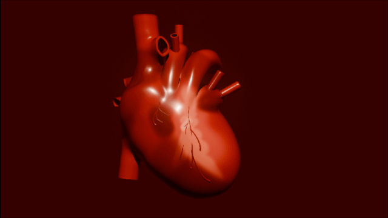
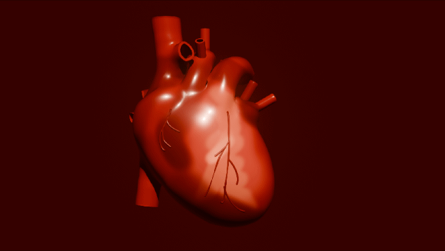
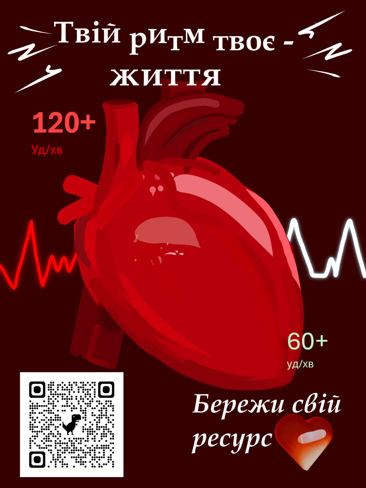

Це не просто вислів...
Такоцубо |
В чому НЕБЕЗПЕКА? |
Особливості
|
Як цьому протидіяти?
|
Чи може серце справді постраждати від пережитих емоцій? Так. Синдром розбитого серця (або кардіоміопатія Такобуцу) - це не метафора, а реальне медичне явище, яке демонструє тісний зв'язок між емоційним станом і роботою серцевоого м'яза, це було підтверджено нейровізуалізацією мозку (фМРТ) та біохімчними дослідженням незалежно від віку пацієнтів.
Точний механізм розвитку цього явища не відомий, проте виділяють декілька видимих причин. Перше - це стрес, саме він є головним в розвитку цієї хвороби. Друге, хоч і дивно, але це радість.Обидва стани мають однаковий механізм розвитку: будь-який раптовий і надзвичайно сильний емоційний сплеск (незалежно від того, чи це горе, страх, чи ейфорія від виграшу, весілля або народження дитини) провокує миттєвий викид гормонів стресу, зокрема адреналіну та норадреналіну.

*Ця 3д анімація демонструє особливості роботи серця при синдромі розбитого серця.

*Ця 3д анімація демонструє здорове серце.
Стан здатний спричинити гострі та потенційно смертельні серцеві ускладнення. Попри те, що в більшості випадків функція серця відновлюється за декілька тижнів, стан потребує невідкладної медичної допомоги.
Під час війни неможливо усунути зовнішні джерела стресу, тому головний захист від синдрому розбитого серця полягає у зниженні реактивності нервової системи та щоденній підтримці серцевого м’яза. По-перше, якісний сон. Недосипання виснажує нервову систему і робить серце ще врахзливішим. По-друге, важливо обмежити стимулятори, наприклад: каву.

.